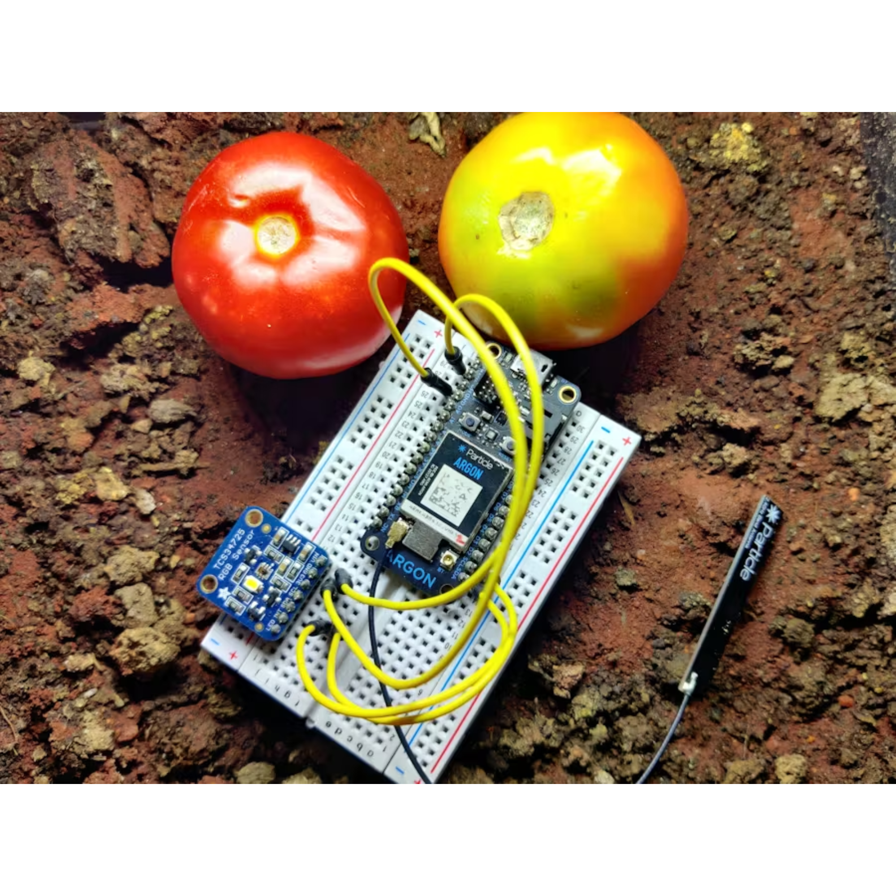

ML for Classification of Tomatoes

Tomato is one of the most popular and widely grown vegetable crops in the world. It belongs to the family Solanaceae. It is one of the very perishable fruit and it changes continuously after harvesting. Depending on the humidity and temperature it ripens very soon, ultimately resulted in poor quality as the fruit become soft and unacceptable. Color in tomato is the most important external characteristic to assess ripeness and post harvest life, and is a major factor in the consumer’s purchase decision. Degree of ripening is usually estimated by color charts. There are six ripening stages reflecting human ability to differentiate ripeness: green, 100% green; breaker, a noticeable break in color with lesser than 10% of other than green color; turning, between 10 and 30% of surface, in the aggregate, of red(ish) color; pink, between 30 and 60% of red(ish) color; light red, between 60 and 90% and red, more than 90% red. We have taken 3 stages and classified them into grades.